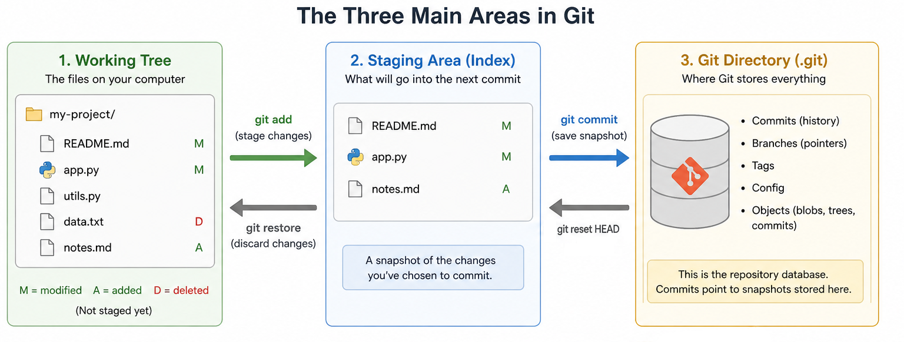
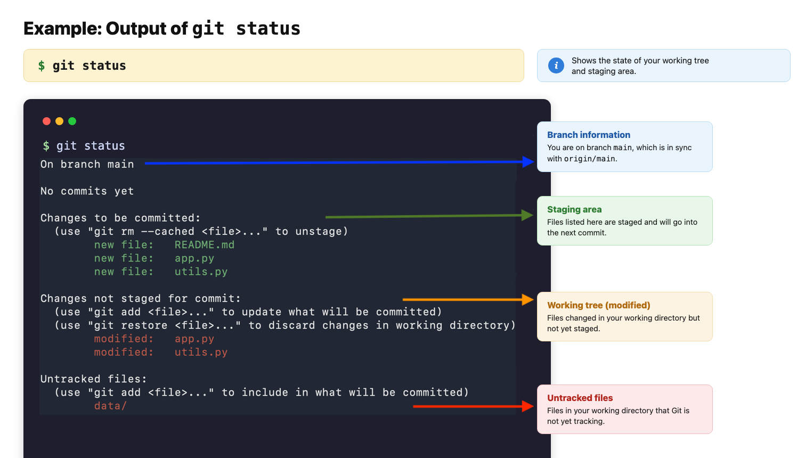

One of the most important ideas in Git is that your project is not just "a folder of files." Git distinguishes between the working tree, the staging area (also called the index), and the Git directory. The working tree is the actual files on disk for whichever version of the project you currently have open, the staging area is where Git stores information about what will go into the next commit, and the Git directory is where Git stores the project's metadata and object database.

Git also describes files in terms of three states. Modified means you have changed the file in the working tree but have not yet prepared that version for the next commit. Staged means you have marked the current version of that file to be included in the next commit snapshot. Committed means the data is safely stored in the local database. These are not just abstract labels — they describe where a change sits in the workflow and what Git will do with it if you commit right now.
A helpful way to see this model is with git status. It displays paths that differ between the index and the current HEAD commit, paths that differ between the working tree and the index, and paths in the working tree that are not tracked by Git. (HEAD is simply Git's name for whichever commit you currently have checked out, normally the tip of your current branch.) In other words, git status is effectively answering three questions: what is already staged for commit, what has changed but is not yet staged, and what new files are not yet tracked.

The staging area is especially important because it allows selective commit construction. git add does not merely mean "start tracking this file." More precisely, it takes a snapshot of the specified content and stages that content in the index, ready for inclusion in the next commit. git add is better thought of as "add precisely this content to the next commit" rather than "add this file to the project." This is a major conceptual advantage over simpler models where committing means "save everything right now" — Git lets you decide what belongs together before you commit.
A simple workflow might look like this:
$ git init
$ echo "# FIT2109" > README.md
$ git status
$ git add README.md
$ git status
$ git commit -m "Add initial README"Here, git init creates an empty Git repository — essentially a .git directory with subdirectories for objects and references, plus an initial branch without commits. After you create README.md, Git sees it as untracked. After git add README.md, the file is staged. After git commit, that staged snapshot becomes part of the repository history.
One setting is worth configuring up front: the name Git gives that first branch. Different installations of Git can default to different names for it. Since version 2.28, Git lets you fix that name explicitly, so every new repository you create starts with the same branch name regardless of machine:
$ git config --global init.defaultBranch mainThis matches the convention used by GitHub, GitLab, and the rest of this unit's material, where the primary branch is always called main.
FIT2109 · Week 4 · Monash University · by Dr. Zahra Mirzamomen